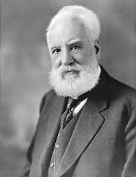

Origen e invención: Alexander Graham Bell y otros inventores clave.
| ¿Quién inventó el teléfono?
|
1-Si juntáramos a los sabios y expertos más importantes del planeta y les pidiéramos que hicieran un top 10 de los inventos más importantes de la historia, no cabe duda de que podríamos sacar como factor común el teléfono.
Con independencia de que sea el primero que se creó, el que había en casa de la abuela o el iPhone de última generación, todos han sido una herramienta clave en el proceso de globalización, acortando distancias y conectando a las personas sin importar su ubicación.
El terminal inteligente que tenemos siempre en el bolsillo lo conocemos muy bien, por eso queríamos rebobinar en la fascinante historia de la tecnología para conocer el controvertido origen del teléfono.
| ¿Quién fue el verdadero inventor del teléfono? |
Hay dos hombres a los que adjudican la creación o nacimiento del teléfono. El primero es el más conocido por todos, Alexander Graham Bell, que por muchos años ha ostentado el título de inventor. El otro es Antonio Meucci, que tiene razones de peso para llevarse el honor. Antonio Meucci: reconocido tarde, pero inventor oficial
Nos tenemos que remontar a 1854 para conocer la creación de un aparato que conectaba la oficina de Meucci con su dormitorio, que estaba en otra planta. El italiano quería establecer una manera de comunicar ambas estancias para estar en contacto con su esposa, inmovilizada por una enfermedad.
El principal problema que se encontró Meucci no fue el invento en sí, sino la patente del mismo, ya que no tenía el dinero suficiente para realizarla. Hizo esfuerzos importantes para conseguirla y muchas demostraciones públicas del artilugio, que fue conocido como teletrófono Alexander Graham Bell, el primero en patentarlo
La realidad es que el invento de Meucci funcionaba, pero diferentes episodios demoraron la patente. El más relevante es el que llevó a su prototipo a las oficinas de Western Union, donde se comenta que cayó en manos de Alexander Graham Bell.
Sea como fuera, el poderoso Bell fue el primero en patentar la idea un 7 de marzo de 1876. En su documento no describe el teléfono como tal, pero sí un aparato que transmitía sonidos por un cable a través de señales eléctricas. El Congreso de Estados Unidos reconoció la contribución de Meucci
En cuanto Meucci conoció la noticia de la patente luchó hasta los últimos años de su vida por el reconocimiento de su trabajo. Por desgracia, falleció sin recibir la gloria que se merecía. Siempre estuvo lastrado por su escaso conocimiento del inglés y su poca desenvoltura ante los temas legales.
Tenemos que llegar hasta el verano de 2002 para conseguir un reconocimiento oficial: el Congreso de los Estados Unidos aceptó la contribución de Antonio Meucci en la invención del teléfono, habiendo demostrado y publicado su invento en 1860. Cómo se inventó el teléfono e hitos en su evolución ¿De dónde salió el teletrófono? En 1849 Meucci realizó diferentes conexiones con alambre de cobre entre él y un paciente. Colocaba un extremo en la boca del atendido, mientras él se situaba en otra habitación ejecutando la misma operación. Había una cuarta terminal unida a un magneto que efectuaba una descarga.
Lo curioso para Meucci es que cuando se hacía la descarga, además de hacer saltar de la silla al paciente, este hablaba y las vibraciones que producían sus palabras llegaban hasta su boca. Había conseguido transportar el sonido.
Lo siguiente era mejorar la calidad de envío y recepción, por lo que trabajó en multitud de prototipos hasta llegar a lo que conocemos como teletrófono, que es el artilugio que usó para comunicarse con su esposa.
Entenderemos mejor el funcionamiento con la descripción del propio Meucci: «Consiste en un magneto electrificado por un hilo en espiral y un diafragma vibratorio. Al vibrar los sonidos de las palabras, el diafragma actúa sobre la corriente, generando interrupciones muy rápidas de la electricidad, como las vibraciones del diafragma. Estos cambios de corriente, al llegar al otro extremo, provocan vibraciones análogas al diafragma receptor, que reproduce las palabras».
|
Primeras versiones y su funcionamiento básico. |
Así era el HTC Dream, el primer teléfono de la historia con Android (y sí, tenía teclado QWERTY)
¿Te imaginas tu vida sin un teléfono móvil? Posiblemente la respuesta sea que no. Es que vivimos en un mundo cada vez más conectado en el que estos dispositivos se han convertido en una necesidad para nuestro día a día. Y los ejemplos nos sobran: los utilizamos para informarnos, escuchar música, podcasts o vídeos, jugar, crear contenidos de todo tipo, y claro, también los usamos para llamar En esta oportunidad te invitamos a viajar hasta octubre de 2008, poco más de un año después de que el iPhone original se pusiera a la venta en Estados Unidos, para recodar el lanzamiento el primer teléfono Android. Estamos hablando del HTC Dream, el dispositivo que marcó un punto de partida para el sistema operativo de Google, actualmente es el más utilizado del mundo, seguido por iOS de Apple.Los rumores de que Google estaba preparando una propuesta para competir con Symbian y Windows Mobile eran cada vez más fuertes en 2007 hasta que en noviembre de ese año, el gigante de Mountain View presentó Android. Se trata de un sistema operativo basado en Linux pensado para funcionar en el hardware de diversos fabricantes y que brindaría la posibilidad de ejecutar aplicaciones de terceros.
En ese momento brindó poca información y no reveló quién sería el primer socio en implementar su sistema operativo móvil. No obstante, en 2008 todo apuntaba a que HTC sería el primer fabricante en adoptar Android en un terminal denominado "Dream", cuyo nombre, como contábamos en Xataka en ese momento, era perfecto para "un terminal que por fin lleve Internet a la palma de la mano de forma fiable y económica".
Finalmente, el 23 de septiembre de 2008 se despejaron las dudas cuando HTC anunció el teléfono. El primer Android comenzó a venderse por 179 dólares en octubre de 2008 bajo el nombre de T-Mobile G1 en Estados Unidos, en noviembre en Reino Unido y continuó su despliegue por Europa y el resto del mundo durante el año siguiente. A España llegó en febrero de 2009 de la mano de Movistar y, a los pocos días, Vodafone presentó el HTC Magic, un modelo mejorado.
Finalmente, el 23 de septiembre de 2008 se despejaron las dudas cuando HTC anunció el teléfono. El primer Android comenzó a venderse por 179 dólares en octubre de 2008 bajo el nombre de T-Mobile G1 en Estados Unidos, en noviembre en Reino Unido y continuó su despliegue por Europa y el resto del mundo durante el año siguiente. A España llegó en febrero de 2009 de la mano de Movistar y, a los pocos días, Vodafone presentó el HTC Magic, un modelo mejorado.
Habíamos pasado de esperar ansiosamente el primer teléfono Android el mercado a tener dos modelos del mismo fabricante. El HTC Dream, con teclado físico, y el HTC Magic, que apostaba todo por una pantalla táctil y traiga consigo algunas mejoras de hardware. Si querías ingresar al mundo Android, la gran pregunta de ese momento era cuál elegir. En respuesta a ello, y tras probar ambos modelos, habíamos preparado una comparativa para ayudar todos aquellos interesados a escoger la mejor opción.
PANTALLA
TFT 3,2"
320 x 480 pixeles
65.000 colores
DIMENSIONES Y PESO
117,7 x 55,7 x 17,1 mm
158 g
PROCESADOR
Qualcomm MSM7201A
528 MHz
RAM
192 MB
ALMACENAMIENTO
256 MB
CÁMARA FRONTAL
No
CÁMARA TRASERA
3,15 MP
BATERÍA
1.150 mAh
SISTEMA OPERATIVO
Android 1.0
Soporta hasta Android 1.6 "Donut"
CONECTIVIDAD
GSM
GPRS
EDGE
HSDPA
OTROS
Teclado QWERTY, Trackball, GPS
Pasemos a las especificaciones de este teléfono histórico. Una de las características más singulares es que contaba con un teclado físico que se deslizaba hacia un lado. En la actualidad, esto podría resultar chocante, pero el HTC Dream nació en un momento en el que Nokia y BlackBerry eran los reyes absolutos del mercado (aunque sabemos que ese reinado no permanecería por mucho tiempo más).
El teclado QWERTY, sin embargo, no era el único método de entrada del dispositivo. También contaba con una pantalla táctil de 3,2 pulgadas que nos permitía aprovechar mejor el potencial de Android. Y no debemos olvidar que el equipo se caracterizaba, además, por tener una "barbilla" en la parte inferior, que albergaba 5 botones (llamar, inicio, menú, atrás, finalizar llamada) y un trackball de desplazamiento y selección.
A nivel de hardware interno nos encontrábamos con un procesador Qualcomm MSM7201A de 528 MHz, compatibilidad con HSDPA, WiFi, bluetooth, un puerto miniUSB, 192 MB de RAM, 256 MB de almacenamiento interno y ranura para tarjetas microSD. En el aparatado cámara, el HTC Dream tenía un único sensor de 3,2 megapíxeles ubicado en la parte de atrás, y no es que las cámaras frontales no existieran, de hecho, el primer teléfono con esta característica, el Kyocera VP-210, apareció en 1999.
Hola, Android 1.0
Como casi cualquier primera versión de un software, Android 1.0 salió al mercado con muchas características que aún no estaban terminadas, no obstante, abría la puerta a una cantidad de características asociadas a Google muy valiosas. Este sistema integraba las aplicaciones Gmail, Maps, Búsqueda, Talk, YouTube, Contactos y Calendario, estas últimas dos con capacidad de sincronización con una cuenta de Google.
|
Expansión del teléfono y su adopción en distintas partes del mundo.
asi fue el primer teléfono celular que se lanzó al mercado
Pesaba un kilo, la batería tenía una autonomía de una hora y costaba 3.995 dólares. Marcó un hito en la historia de la comunicación
La primera vez que se describió un sistema celular para la comunicación fue en un trabajo de D.HR, de los Laboratorios Bell en 1947. Sin embargo, tuvo que pasar más de dos décadas para que esa idea se pudiera plasmar en un equipo móvil.
Uno de los grandes inconvenientes era que los celulares funcionan con frecuencias altas y en aquel entonces no existía la tecnología necesaria para poder llevar este proyecto a la práctica.
El primer móvil fue el Motorola DynaTAC 8000X . Pesaba casi un kilo, y sus dimensiones nada se parecen a lo que son los pequeños teléfonos de la actualidad: medía 33.02 x 4,445 x 8,89 centímetros.
Además, contaba con una pantalla con display LED de color rojo que mostraba el número que se marcaban
La batería también distaba bastante de las que utilizan los teléfonos en la actualidad: apenas duraba una hora en uso o bien ocho horas en reposo. Y hacer una carga completa llevaba 10 horas
La primera llamada con este móvil la hizo Martín Cooper directivo de Motorola el 3 de abril de 1973. Se comunicó, desde Nueva York, con su mayor rival en el mundo de la telefonía: Joel Engel de AT&T
El equipo fue presentado oficialmente recién en 1984. Y Ameritech Mobile Communications LLC fue la primera compañía, en Estados Unidos, en proveer servicio de telefonía móvil.
Cuando salió al mercado costaba 3.995 dólares. Un verdadero artículo de lujo y símbolo de status. En un año se vendieron 300 mil unidades.
La serie DynaTAC, que marcó un verdadero hito histórico, estuvo activa en Motorola hasta 1992.
|